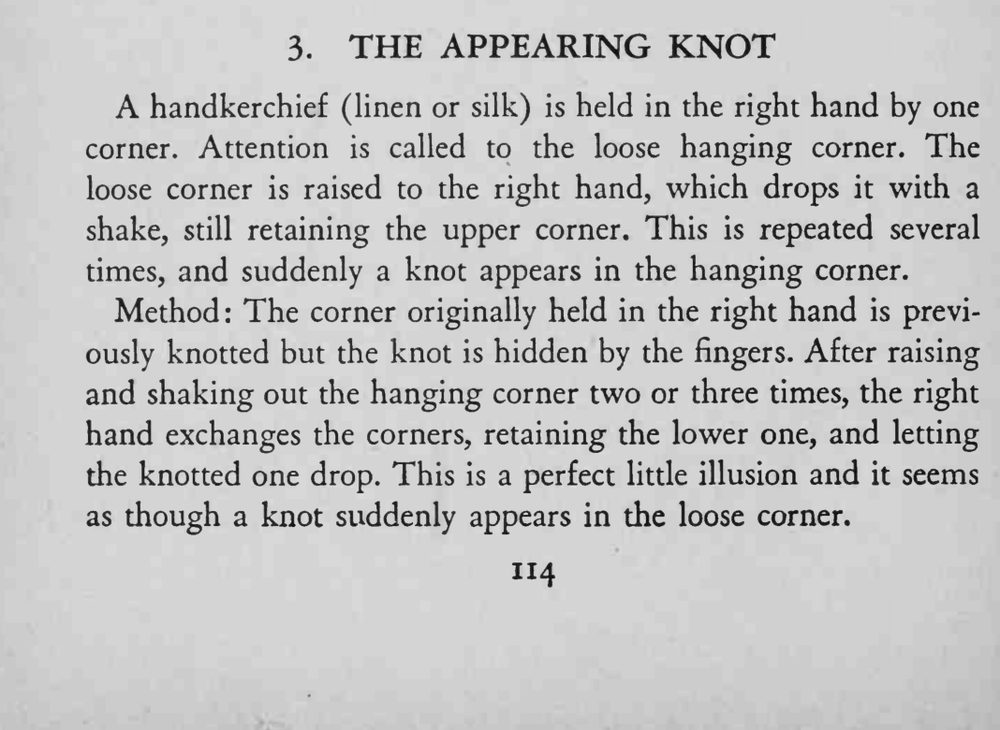
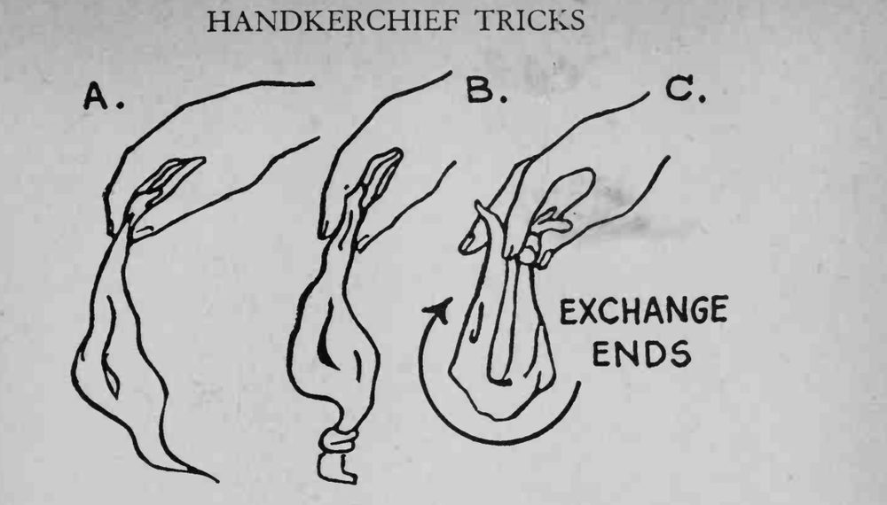

手帕一角在右手，另一角垂着；右手几次提起又抖落垂角之后，垂角上忽然出现一个结。
换角的动作要藏在提、抖的节奏里，别让观众盯着手指。


A handkerchief (linen or silk) is held in the right hand by one corner. Attention is called to the loose hanging corner. The loose corner is raised to the right hand, which drops it with a shake, still retaining the upper corner. This is repeated several times, and suddenly a knot appears in the hanging corner. Method: The corner originally held in the right hand is previously knotted but the knot is hidden by the fingers. After raising and shaking out the hanging corner two or three times, the right hand exchanges the corners, retaining the lower one, and letting the knotted one drop. This is a perfect little illusion and it seems as though a knot suddenly appears in the loose corner. f/lJW EXCHANGE (/(jA ENDS